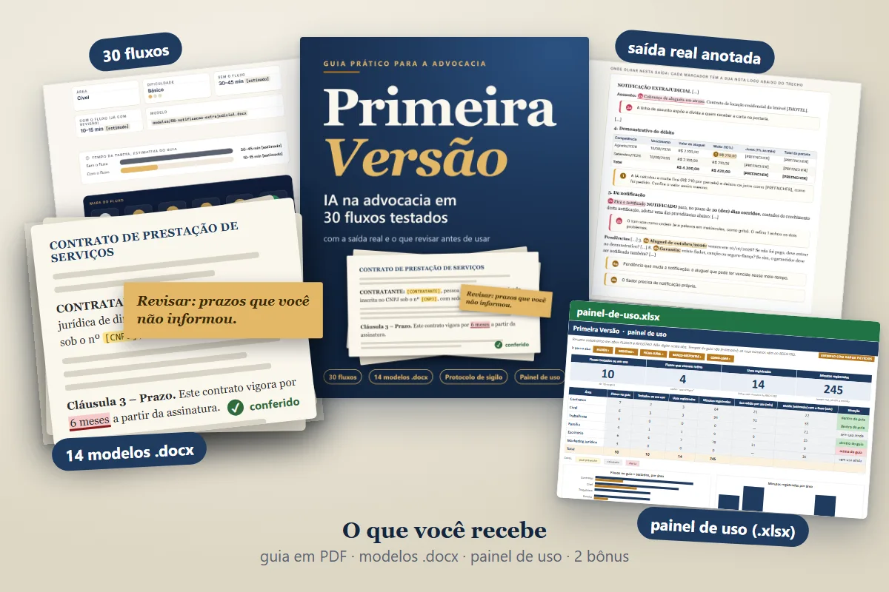
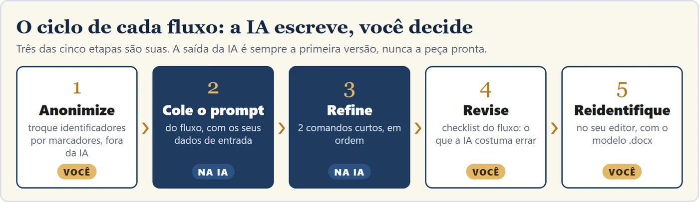
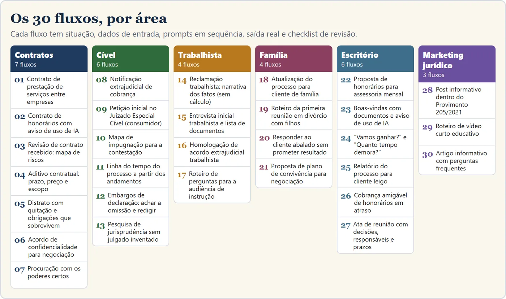
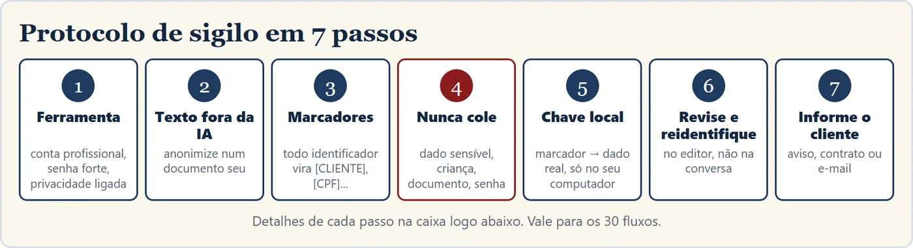
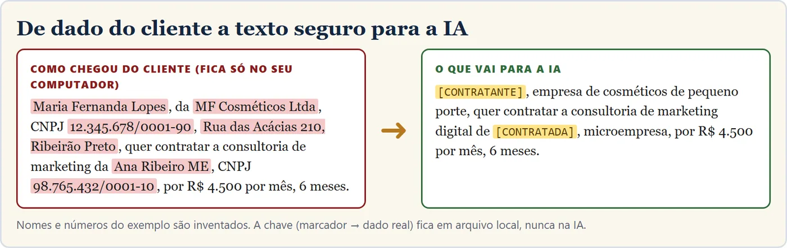
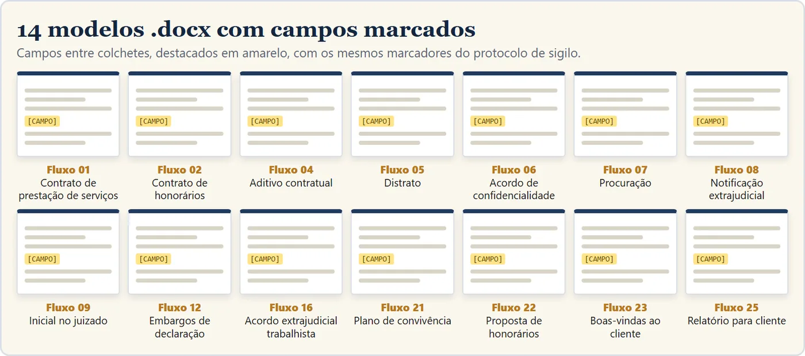
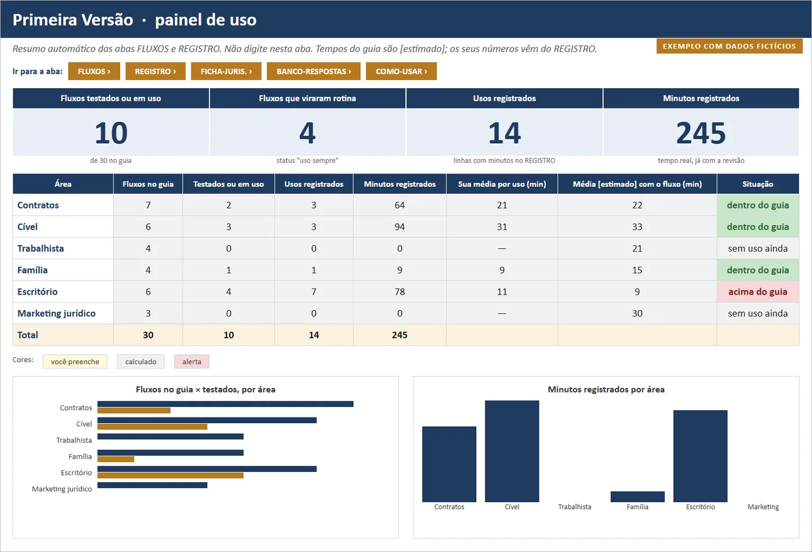
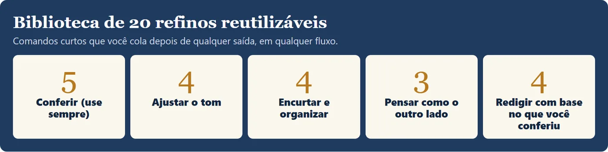
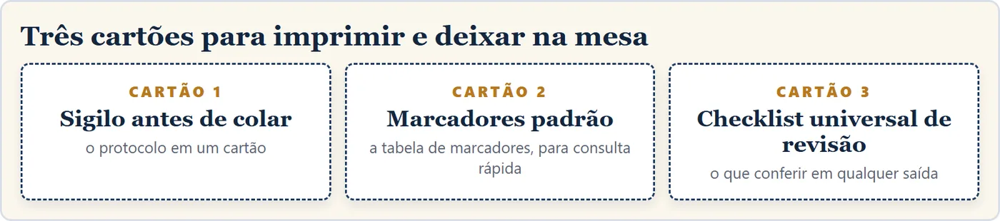

Da página em branco à primeira versão de 30 tarefas do seu escritório. Você revisa, com método.
Contratos, peças simples, mensagens para cliente e conteúdo. Cada fluxo traz os prompts em sequência, a saída real que a IA devolveu e o checklist do que conferir.
Quero o Primeira Versão por R$ 97
Apresentadora virtual: vídeo, voz e cenas gerados com IA.
A IA faz a primeira versão. Quem revisa e assina é você.
Prompt solto é uma frase. Aqui, cada tarefa vem como um caminho inteiro, com o que entra, o que a IA devolveu e onde ela costuma errar.
- 1O comando pronto, em sequência, para copiar e colar.
- 2A resposta real da IA, com o erro apontado quando houve.
- 3O checklist do que conferir antes de a peça sair da sua mesa.
A IA escreveu isto. O cliente nunca disse. Você pegaria?
Trecho real do fluxo 14 (narrativa dos fatos trabalhista), rodado com dados fictícios.
Desde janeiro de 2024, quando o gerente assumiu, saía "por volta das 19h, quase todo dia".
"Desde então, [CLIENTE] passou a sair, em regra, por volta das 19h, quase todos os dias, e não mais às 17h, como previsto em contrato."
A IA acrescentou "em regra", uma frequência que o cliente não usou, e "e não mais às 17h", que afirma que antes ele saía no horário. O cliente não disse isso. Numa audiência, cada acréscimo vira pergunta da outra parte. O refino 1 do fluxo 14 pegou os dois, e o checklist manda conferir frase por frase.
Mapa de contestação
A cliente disse que um fato era verdadeiro. A IA marcou "admite com ressalva" e criou um argumento.
Pesquisa de jurisprudência
Sugeriu a Turma Nacional de Uniformização, dos Juizados Federais, para um caso de Juizado estadual.
Artigo com FAQ
Falou em prazo "razoável" de tolerância e omitiu a regra legal de até 180 dias (art. 43-A da Lei 4.591/1964).
Em mais de 10 dos 30 fluxos, a saída real traz um deslize, apontado numa nota e pego pelo checklist.
O cliente mandou o contrato da locação da loja e pergunta: "posso assinar?". Você tem três coisas na frente, uma audiência amanhã e o celular vibrando.
Você abre a IA. Cola o texto inteiro, com nome do cliente e endereço do imóvel. Volta um texto bonito, seguro de si, com um artigo que você não lembra de ter lido assim. Você abre a lei para conferir. Perdeu o tempo que ia ganhar.
Ou nem abre, porque da última vez a IA inventou um julgado.
Os dois caminhos têm o mesmo problema: ninguém te mostrou o que a IA costuma errar em cada tipo de peça, nem como usar sem expor o cliente.
O Primeira Versão põe o erro na mesa: mostra a saída real, aponta o deslize e entrega o checklist que o pega. Quem aprende a pegar o erro usa a IA com mais confiança, não com menos.
Os 30 fluxos têm as mesmas 6 partes
Você aprende a usar a IA para o que ela faz bem (organizar, estruturar, redigir) e a vigiar o que ela faz mal.
Situação
A tarefa real e quando usar.
Dados de entrada
Os campos que você preenche, já anonimizados.
Prompt principal
Pronto para copiar.
Refinos
Comandos curtos, em ordem, para ajustar o que voltou.
Saída real
O que a IA devolveu quando rodamos com dados fictícios.
Revisão
O checklist do que a IA costuma errar naquela peça.

Tudo para rodar a primeira tarefa hoje
30 fluxos em 180 páginas
- Rode uma tarefa de ponta a ponta com um caso real anonimizado, no mesmo dia.
- Veja a saída que a IA devolveu antes de gastar o seu tempo.
- Checklist próprio em cada fluxo.
- Tempo com e sem o fluxo, sempre marcado como estimativa. No fluxo 03: 90–120 min sem, 40–60 min com, já com a sua revisão [estimado].

Use a IA sem colar dado de cliente
- Anonimize um caso e reidentifique a saída em 2 minutos no Word, com marcadores que casam com os modelos.
- Saiba o que nunca colar na IA, nem anonimizado.
- Roteiro para informar o cliente sobre o uso de IA (fluxos 02 e 23 trazem a cláusula e o e-mail).
- Baseado nas recomendações do Conselho Federal da OAB (nov/2024), no Estatuto da Advocacia e na LGPD.


Comece de um modelo, não da folha em branco
- Campos em amarelo e aviso em vermelho no topo, para nada sair sem revisão.
- Contrato de serviços, honorários, aditivo, distrato, confidencialidade, procuração, notificação, inicial de Juizado, embargos, acordo trabalhista, plano de convivência, proposta de honorários, boas-vindas e relatório para cliente.

Meça o seu tempo, com os seus números
- Os 30 fluxos por área e dificuldade, e quais você já rodou.
- Registro do tempo real de cada uso, comparado com a estimativa.
- Ficha de verificação de jurisprudência com alerta vermelho enquanto faltar o link.
- Banco com 8 respostas revisadas para perguntas difíceis de cliente.

2 bônus
Biblioteca de 20 refinos jurídicos
Comandos curtos para colar depois de qualquer saída: conferir invenções, ajustar o tom, tirar promessa, achar contradição, pedir o outro lado.

Cartões de mesa para imprimir
Sigilo antes de colar, tabela de marcadores e checklist universal de revisão com 10 itens, para deixar ao lado do monitor.

Para quem é, e para quem não é
É para você se
- é advogado ou advogada autônomo(a), ou trabalha num escritório de 1 a 5 pessoas;
- já usa um assistente de IA (ou quer começar) e perde horas com contratos, peças simples e mensagens repetitivas;
- quer ganhar a primeira versão, mas faz questão de revisar tudo antes de usar;
- se preocupa com o sigilo do cliente e com a recomendação da OAB de informar o cliente do uso de IA.
Não é para você se
- procura peça pronta sem revisão. Nada neste material é peça pronta;
- quer um banco de jurisprudência. O guia ensina a montar a pesquisa nos sites oficiais;
- espera cálculo trabalhista ou previdenciário. Nos fluxos trabalhistas, é só redação;
- não é da área do Direito. Não é curso de Direito.
Sem mensalidade. Sem renovação.
- Guia com 30 fluxos testadosPDF, 180 páginas
- Protocolo de sigilo7 passos + roteiro para o cliente
- 14 modelos em Wordcampos marcados
- Painel de usoplanilha com 6 abas
- Bônus: 20 refinos + cartões de mesaincluídos
pagamento único · Pix, cartão ou boleto
Uma conta honesta: no fluxo 03, o guia estima 90–120 minutos sem o fluxo e 40–60 com ele, já contando a sua revisão [estimado]. É uma estimativa nossa, não uma promessa. Se um fluxo bem escolhido poupar uma hora da sua semana, você sabe quanto isso vale. O painel serve para medir com os seus números.
GARANTIA
Teste com um caso seu. Não serviu, devolvemos.
Compre, leia o protocolo e rode um fluxo com um caso seu. Se achar que não é para o seu escritório, escreva dentro de 7 dias e devolvemos o valor pago, sem perguntas. É o seu direito de arrependimento (CDC, art. 49), e a devolução é feita pela própria plataforma de pagamento.
Antes de decidir
Preciso de uma ferramenta de IA paga?
Não. Os fluxos funcionam com qualquer assistente de IA de uso geral que aceite texto. Não dependem de recurso específico, extensão nem plano pago. O guia não é parceiro de nenhuma ferramenta.
A IA vai receber os dados dos meus clientes?
Só se você colar. O protocolo de sigilo ensina a montar o texto fora da IA, trocar nomes e identificadores por marcadores e só então colar, e diz o que nunca colar, nem anonimizado. Isso não é parecer jurídico: a decisão sobre o seu escritório continua sendo sua.
E se a IA errar?
Ela erra, e o guia parte disso. Em mais de 10 dos 30 fluxos a saída real mostra um erro, a nota diz qual é e o checklist ensina a pegar. Todo texto é rascunho para a sua revisão técnica.
Posso protocolar o que a IA gerar?
Não sem revisão. Nada no guia é peça pronta. A IA entrega uma primeira versão; a leitura, a conferência da lei e do julgado e a assinatura são suas.
O guia traz jurisprudência?
Não como fonte. O fluxo 13 usa a IA para montar a estratégia de busca nos sites oficiais e trabalhar só sobre julgado que você conferiu, com ficha de verificação.
Serve para trabalhista e família?
Sim, com limites claros. Na área trabalhista é só redação: não há cálculo, e os valores entram prontos. Em família, o foco é a comunicação com o cliente.
Como recebo o material?
Depois da confirmação do pagamento, o acesso à área de membros chega por e-mail. Lá você baixa o guia em PDF, os 14 modelos em Word, o painel em planilha (.xlsx) e o pacote completo. Os cartões de mesa estão no próprio guia, para imprimir.
Preciso ser especialista em IA?
Não. Cada fluxo tem o prompt pronto para copiar e a explicação de cada campo. Se você sabe colar um texto numa conversa, consegue rodar.
Quem é a apresentadora dos vídeos?
Uma personagem virtual: o vídeo, a voz e as cenas são gerados com IA. Ela não é advogada nem cliente, e as conversas mostradas são resumos das execuções reais dos fluxos.
O Primeira Versão tem relação com a OAB?
Não. É um produto independente, sem vínculo com a OAB ou qualquer instituição. O nome vem do que a IA entrega: uma primeira versão, que você transforma em peça.
Você já tem a IA aberta numa aba.
Falta o método.
Em um dia você pode configurar a privacidade da ferramenta, colar a instrução-base e rodar o seu primeiro fluxo com um caso real anonimizado.
Quero o Primeira Versão por R$ 97Material de apoio profissional. Não substitui a análise, o julgamento nem a responsabilidade do(a) advogado(a). As saídas de IA são rascunho e variam por ferramenta. Os tempos são estimativas nossas, marcadas como [estimado].